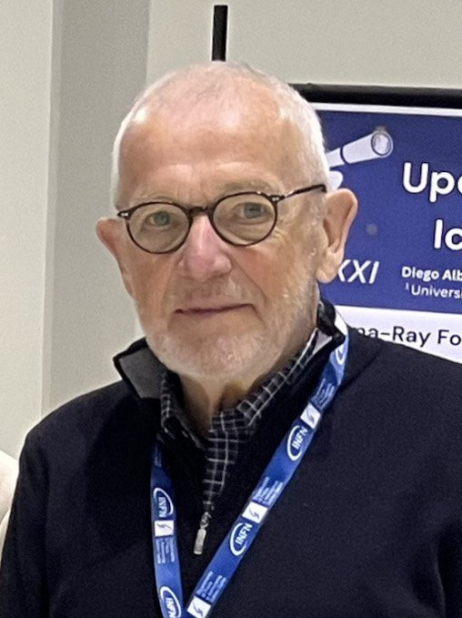
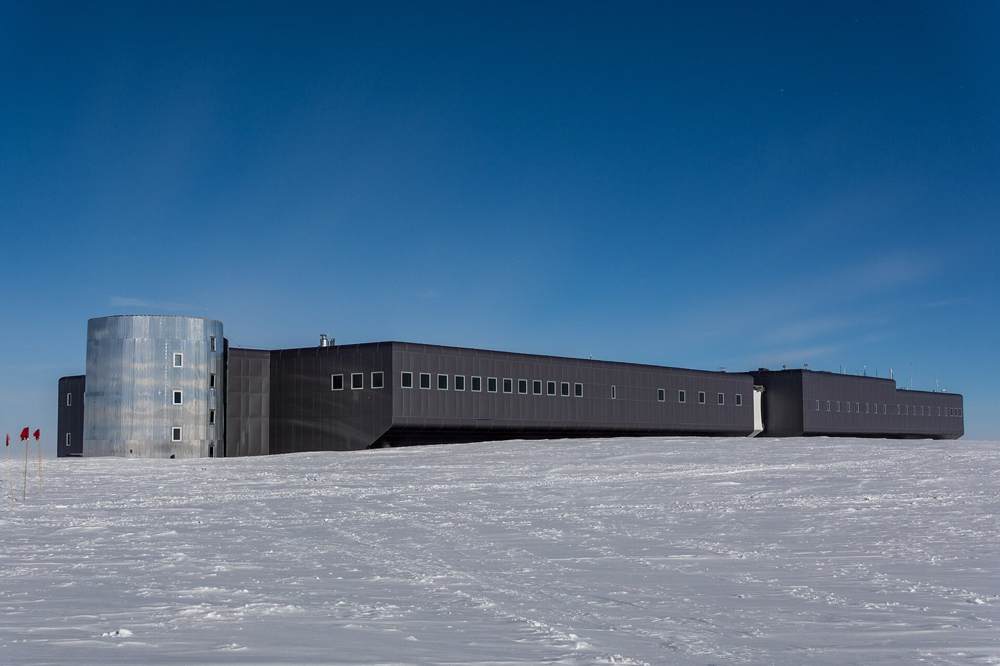
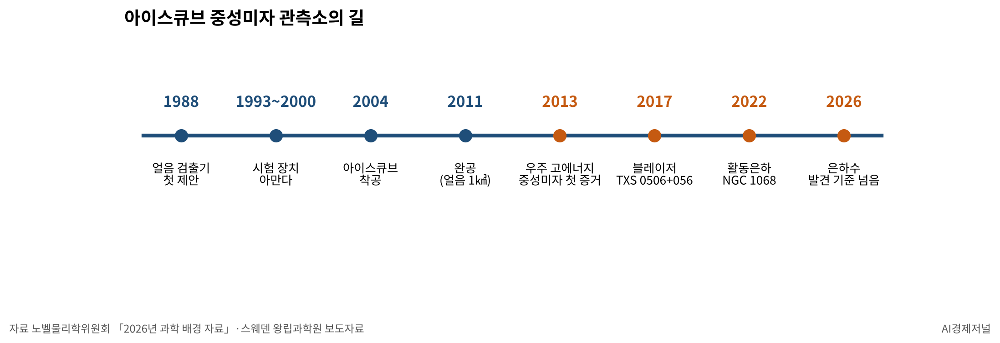

[노벨물리학상] 남극 얼음 1㎦로 연 중성미자 천문학
할젠의 1988년 얼음 검출기 구상과 아이스큐브
2013년 우주 고에너지 중성미자 첫 증거
블레이저·활동은하·은하수로 넓힌 관측
AI경제저널=김갑봉 기자 | 2026년 10월 6일 스웨덴 왕립과학원이 노벨물리학상 수상자를 발표했다. 프랜시스 할젠(Francis Halzen) 미국 위스콘신-매디슨대 교수의 단독 수상이다.
공적은 「아이스큐브 중성미자 관측소에 대한 결정적 기여와 우주에서 온 고에너지 중성미자의 발견」이다. 할젠은 1944년 벨기에 티넌에서 태어나 1969년 루뱅대에서 박사 학위를 받았다. 상금은 1200만 크로나다.
지구를 그냥 지나가는 입자, 중성미자
중성미자는 1930년 볼프강 파울리(Wolfgang Pauli)가 존재를 제안했고 1956년 원자로 실험에서 확인됐다.
중성미자는 어디에나 있지만 좀처럼 모습을 드러내지 않는다. 왕립과학원은 중성미자가 지구와 우리 몸을 알아채지 못하게 뚫고 지나간다고 설명했다.
아주 드물게 원자핵과 부딪칠 때만 잡을 길이 생긴다.
우주에는 지구 실험실보다 최대 100만 배 큰 에너지로 입자를 쏘는 천연 가속기가 있다. 왕립과학원은 그 정체와 위치가 아직 많은 부분 수수께끼라고 설명했다.
전하를 띤 우주선은 자기장에 휘어 출발점을 알기 어렵다.
중성미자는 다르다. 왕립과학원은 고에너지 중성미자가 방향을 바꾸거나 에너지를 잃지 않고 지구에 닿는다고 밝혔다. 다른 방법으로는 얻을 수 없는 정보를 싣고 온다.

1988년, 남극 얼음을 검출기로
할젠은 1987년 가을 미국 캔자스대 강연에서 한 빙하학자에게 남극 얼음 속 중성미자 반응을 전파로 잡으려는 러시아 구상을 들었다. 그는 동료 스타네프·사스와 함께 그 방식은 문턱이 너무 높아 우주 중성미자를 잡기 어렵다고 판단했다.
대신 체렌코프 빛을 떠올렸다. 중성미자가 얼음 속 원자핵과 부딪쳐 생긴 입자가 얼음 속 빛보다 빨리 달릴 때 내는 빛으로, 자외선 쪽이 많다. 할젠과 존 러니드는 1988년 6월 얼음을 표적이자 빛의 매질로 쓰는 검출기를 처음 제안했다.
왕립과학원은 남극 얼음이 잡음이 적고 지진이 없는 안정된 땅 위에 있다는 점을 장점으로 들었다. 1993~2000년 단계적으로 지은 「아만다」는 깊이 1㎞ 안팎의 구멍에 빛 센서를 내리는 방식을 보였다.
얕은 얼음 속 공기 방울이 빛을 흩뜨린다는 사실도 이때 드러났다. 그래서 센서를 1500~2000m로 더 깊이 넣었다.
얼음 1㎦, 빛 센서 5000여 개
1999년 할젠을 책임연구자로 한 아이스큐브 제안서가 미국 국립과학재단에 들어갔다. 재단은 2002년 3월 예산을 승인했고 2004년 공사가 시작됐다.
2005~2010년 뜨거운 물로 얼음을 뚫어 줄 86개를 깊이 1450~2450m에 내렸다. 줄마다 빛 센서 60개가 17m 간격으로 달렸다. 얼음 1㎦에 센서 5000개 넘게 묻은 관측소는 2011년 완공됐다.

센서가 잡은 빛의 양으로 에너지를, 빛이 닿은 시각 차이로 방향을 잰다. 해마다 잡히는 중성미자 약 10만 개 가운데 대부분은 대기에서 생기고, 우주에서 오는 것은 약 100개로 본다.
관측소는 미국 국립과학재단이 관리하고 14개 나라 58개 기관 약 450명이 함께 운영한다.
2013년 첫 발견, 블랙홀 은하까지
2013년 아이스큐브는 2년 치 자료에서 1페타전자볼트가 넘는 중성미자 2개를 찾았다. 우주에서 온 고에너지 중성미자의 첫 증거였다. 같은 자료에서 모두 28개를 찾았다. 2014년에는 2010~2013년 자료로 순전히 대기에서 생겼다는 설명이 통계적으로 기각됐다.
2017년 9월 22일 잡힌 중성미자는 블레이저 TXS 0506+056 방향에서 왔다. 블랙홀이 물질을 빨아들이며 제트를 지구 쪽으로 뿜는 은하다.
경보는 1분 안에 전 세계 망원경에 전해졌다.
2022년에는 4600만 광년 떨어진 활동은하 NGC 1068 방향에서 중성미자 79개를 관측했다. 통계적 유의도는 4.2시그마로, 과학 배경 자료는 이 은하를 중성미자원 후보로 다룬다. 2023년 우리 은하에서 나온 고에너지 중성미자를 처음 보고했고, 2026년 12년 치 자료로 발견 기준을 넘겼다.

다중신호 천문학의 새 창
과학 배경 자료는 중성미자가 우주 가속기의 방향과 에너지 정보를 왜곡 없이 전해 고에너지 우주를 보는 새 창을 열었다고 평가했다. 감마선·중성미자·우주선에 앞으로는 중력파까지 함께 보는 다중신호 천문학의 한 축이다.
다음 10년은 더 큰 관측소들이 잇는다. 남극의 아이스큐브-2세대, 지중해의 KM3NeT, 러시아 바이칼호의 바이칼-GVD 같은 1㎦ 넘는 망원경이 세계 관측망을 이룬다.
마크 피어스(Mark Pearce) 노벨물리학위원장은 할젠이 국제 연구진을 이끌어 훌륭한 관측 장비를 만들었다고 말했다. 그는 할젠의 끈기와 과학적 전망이 새로운 천문학의 길을 열었다고 덧붙였다. 할젠은 12월 10일 스톡홀름 콘서트홀 시상식에서 상을 받는다.
참고문헌
- Halzen, F.·Learned, J., 「High-energy neutrino detection in deep polar ice」, 위스콘신-매디슨대 예비 논문 MAD/PH/428, 1988년 6월
- AMANDA Collaboration, 『Nature』 410, 2001년, 441쪽
- IceCube Collaboration, 『Journal of Instrumentation』 12, 2017년, P03012
- IceCube Collaboration, 『Physical Review Letters』 111, 2013년, 021103
- IceCube Collaboration, 『Science』 342, 2013년, 1242856
- IceCube Collaboration, 『Physical Review Letters』 113, 2014년, 101101
- IceCube Collaboration, 『Science』 361, 2018년, eaat1378
- IceCube Collaboration, 『Science』 378, 2022년, 538쪽
- IceCube Collaboration, 『Science』 380, 2023년, 1338쪽
- IceCube Collaboration, arXiv:2607.25966, 2026년
- 노벨물리학위원회, 「Scientific Background to the Nobel Prize in Physics 2026」, 2026년 10월 6일, https://www.nobelprize.org/uploads/2026/10/advanced-physicsprize2026-1.pdf
- 스웨덴 왕립과학원, 「Press release: The Nobel Prize in Physics 2026」, 2026년 10월 6일, https://www.nobelprize.org/prizes/physics/2026/press-release/
- 노벨재단, 「Nobel Prize award ceremony 2026」, https://www.nobelprize.org/ceremonies/nobel-prize-award-ceremony-2026/
[사진 출처]
- [사진 1] 이탈리아 국립핵물리연구소(INFN), 「Francis Halzen (2025)」, 제21회 중성미자 망원경 워크숍 사진(2025년 10월 1일), CC0 1.0, https://commons.wikimedia.org/wiki/File:Francis_Halzen_(2025).jpg (공개 조건 https://agenda.infn.it/event/44606/page/10593-photo-gallery)
- [사진 2] 마이크 루시벨라(Mike Lucibella), 미국 국립과학재단, 「South Pole Station Clear Blue Sky」, 2018년 12월 5일, 미국 남극프로그램 사진 자료실, 퍼블릭 도메인, https://commons.wikimedia.org/wiki/File:South_Pole_Station_Clear_Blue_Sky.jpg
※ 이 기사는 인공지능기자 위민아이(Wemin_AI)와 협력해 작성했습니다.
관련기사
저작권자 © AI경제저널 무단전재 및 재배포, AI학습 및 활용 금지